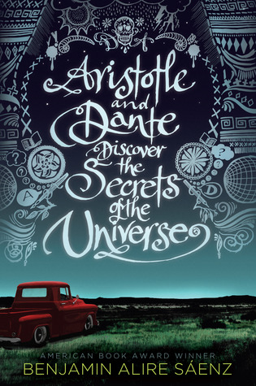
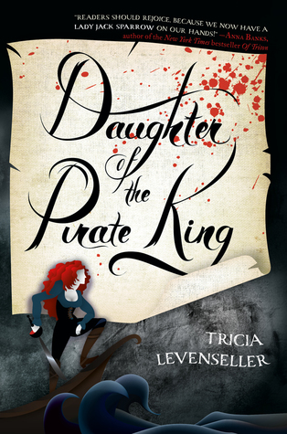

|  | Aristotle and Dante Discover the Secrets of the Universe Dante can swim. Ari can't. Dante is articulate and self-assured. Ari has a hard time with words and suffers from self-doubt. Dante gets lost in poetry and art. Ari gets lost in thoughts of his older brother who is in prison. Dante is fair skinned. Ari's features are much darker. It seems that a boy like Dante, with his open and unique perspective on life, would be the last person to break down the walls that Ari has built around himself. But against all odds, when Ari and Dante meet, they develop a special bond that will teach them the most important truths of their lives, and help define the people they want to be. But there are big hurdles in their way, and only by believing in each other―and the power of their friendship―can Ari and Dante emerge stronger on the other side. |
|  | Daughter of the Pirate King Sent on a mission to retrieve an ancient hidden map—the key to a legendary treasure trove—seventeen-year-old pirate captain Alosa deliberately allows herself to be captured by her enemies, giving her the perfect opportunity to search their ship. More than a match for the ruthless pirate crew, Alosa has only one thing standing between her and the map: her captor, the unexpectedly clever and unfairly attractive first mate, Riden. But not to worry, for Alosa has a few tricks up her sleeve, and no lone pirate can stop the Daughter of the Pirate King. |
 | The Cruel Prince Jude was seven when her parents were murdered and she and her two sisters were stolen away to live in the treacherous High Court of Faerie. Ten years later, Jude wants nothing more than to belong there, despite her mortality. But many of the fey despise humans. Especially Prince Cardan, the youngest and wickedest son of the High King.To win a place at the Court, she must defy him–and face the consequences. As Jude becomes more deeply embroiled in palace intrigues and deceptions, she discovers her own capacity for trickery and bloodshed. But as betrayal threatens to drown the Courts of Faerie in violence, Jude will need to risk her life in a dangerous alliance to save her sisters, and Faerie itself. |
 | Verity Lowen Ashleigh is a struggling writer on the brink of financial ruin when she accepts the job offer of a lifetime. Jeremy Crawford, husband of bestselling author Verity Crawford, has hired Lowen to complete the remaining books in a successful series his injured wife is unable to finish. What Lowen doesn't expect to uncover in the chaotic office is an unfinished autobiography Verity never intended for anyone to read. Page after page of bone-chilling admissions, including Verity's recollection of what really happened the day her daughter died. Lowen decides to keep the manuscript hidden from Jeremy, knowing its contents would devastate the already grieving father. But as Lowen's feelings for Jeremy begin to intensify, she recognizes all the ways she could benefit if he were to read his wife's words. After all, no matter how devoted Jeremy is to his injured wife, a truth this horrifying would make it impossible for him to continue to love her |
 | The Invisible Life of Addie LaRue France, 1714: in a moment of desperation, a young woman makes a Faustian bargain to live forever and is cursed to be forgotten by everyone she meets. Thus begins the extraordinary life of Addie LaRue, and a dazzling adventure that will play out across centuries and continents, across history and art, as a young woman learns how far she will go to leave her mark on the world. But everything changes when, after nearly 300 years, Addie stumbles across a young man in a hidden bookstore and he remembers her name. |